2026年10月8日
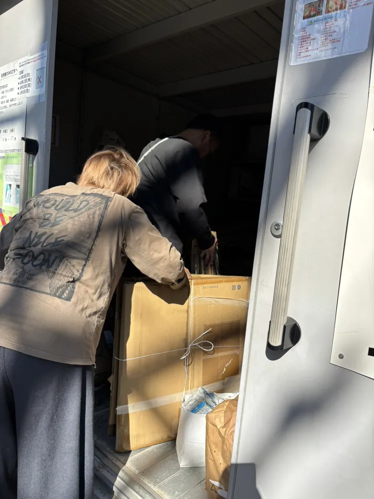
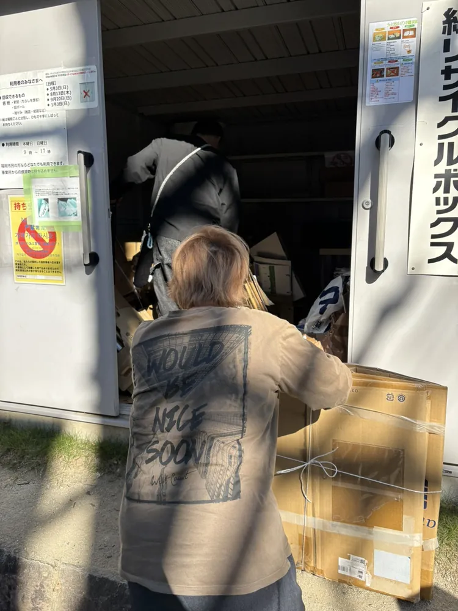
活動記録 2025年7月〜2026年10月（6回）
小田部地区で実施された古紙回収活動に、当事業所の利用者さん、職員で参加しました。地域の皆さんと一緒に、新聞・段ボールなどを収集・分別する作業を担当。限られた時間の中で、メンバー一人ひとりが自分のペースで力を発揮しました。
こうした地域行事への参加は、地域との顔つなぎになるとともに、メンバーにとっても社会参加の貴重な機会となっています。今後も継続的に関わっていけるよう取り組んでいきます。


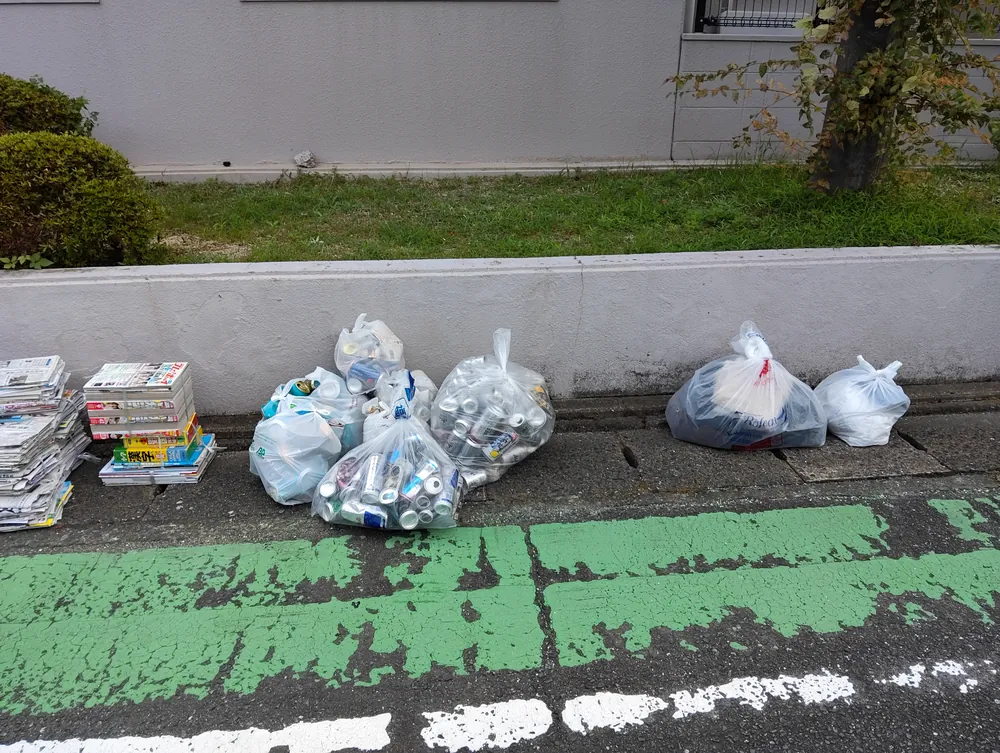
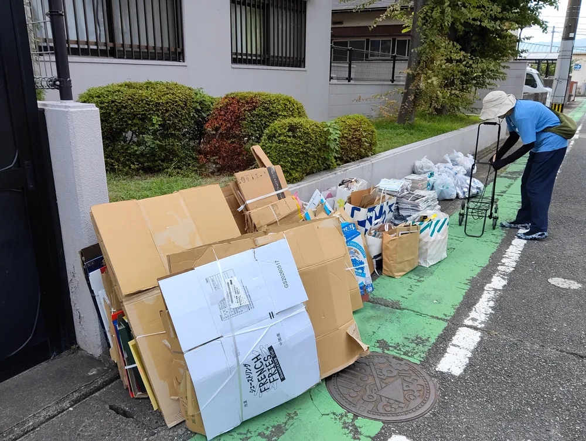
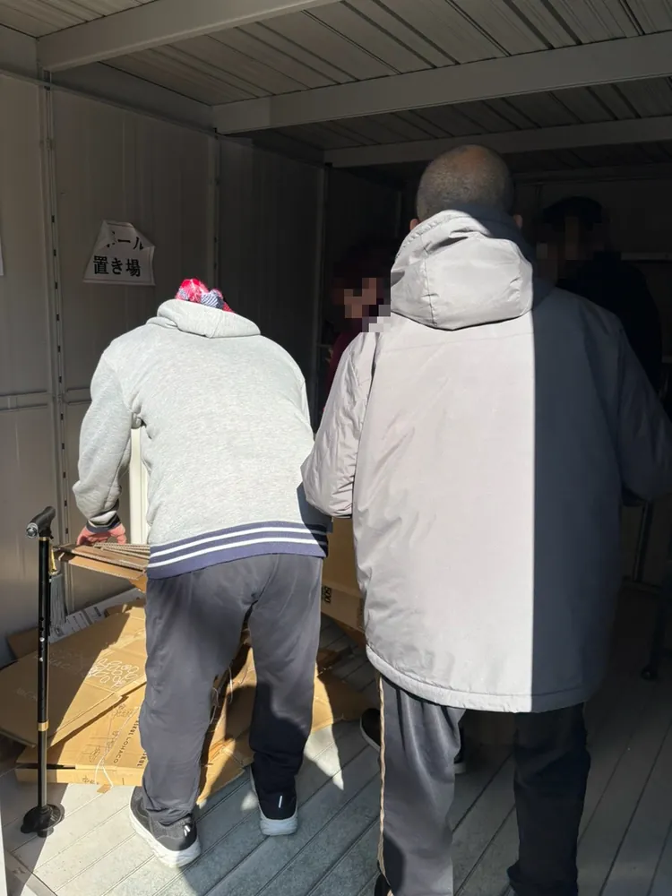
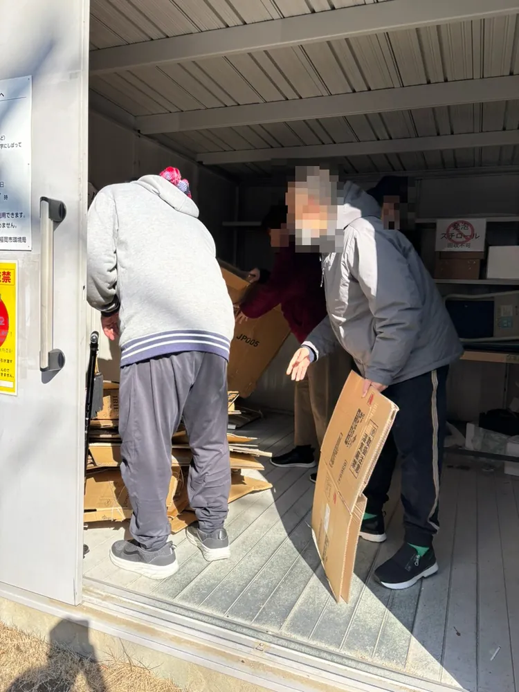
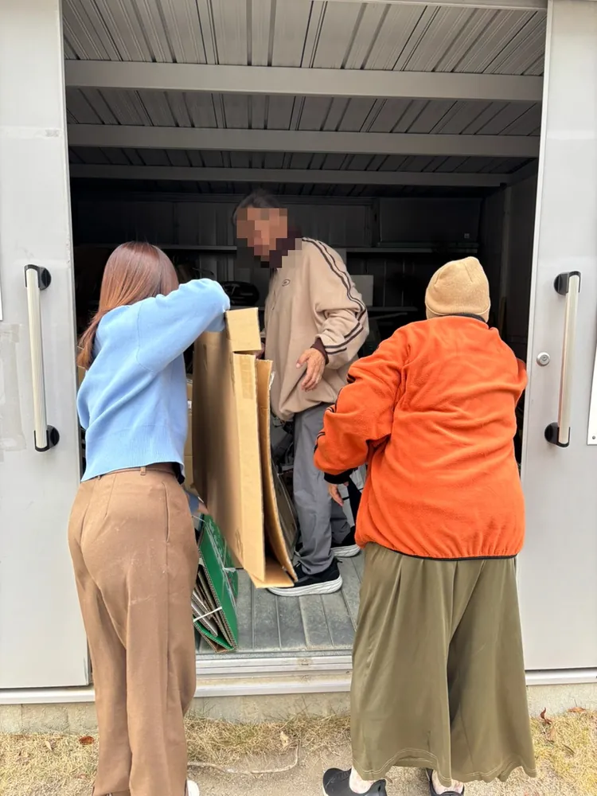
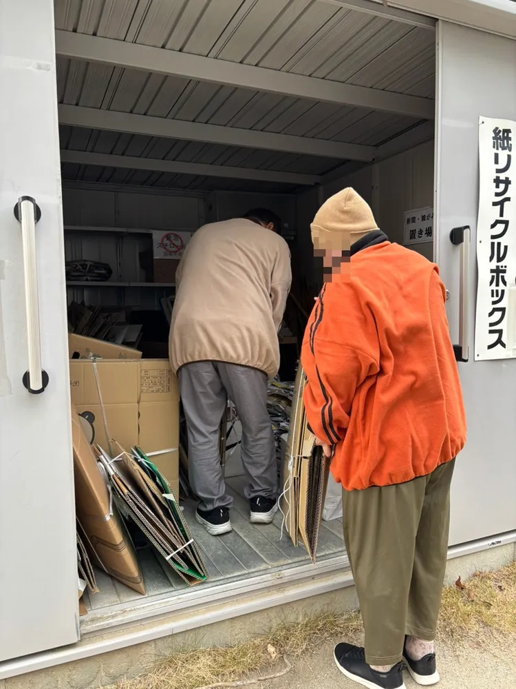
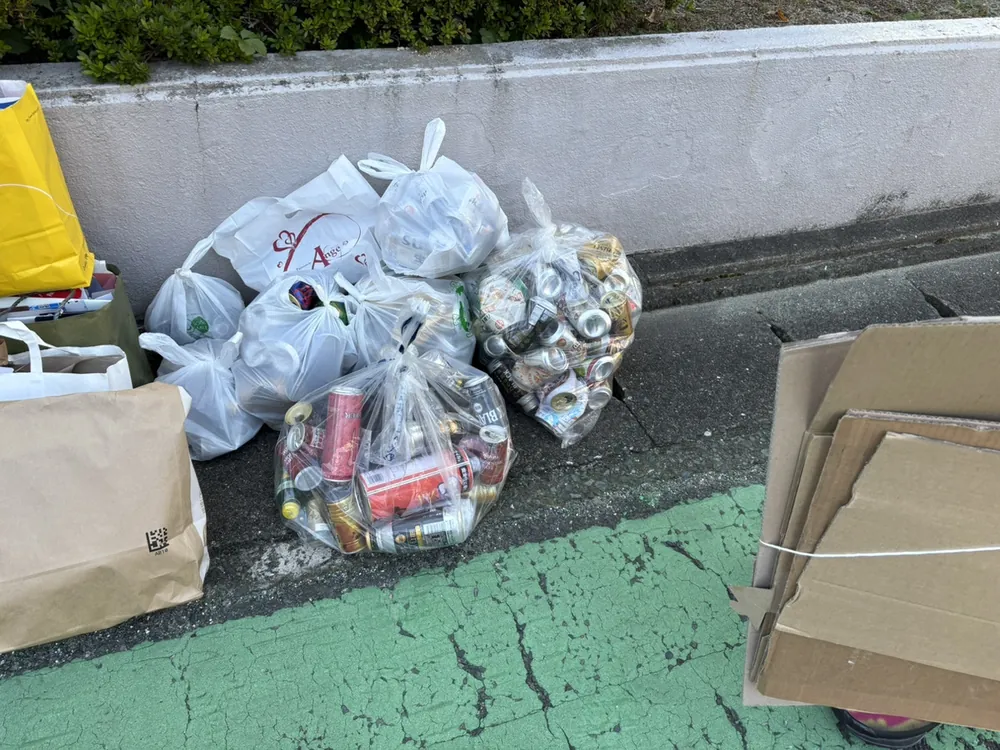
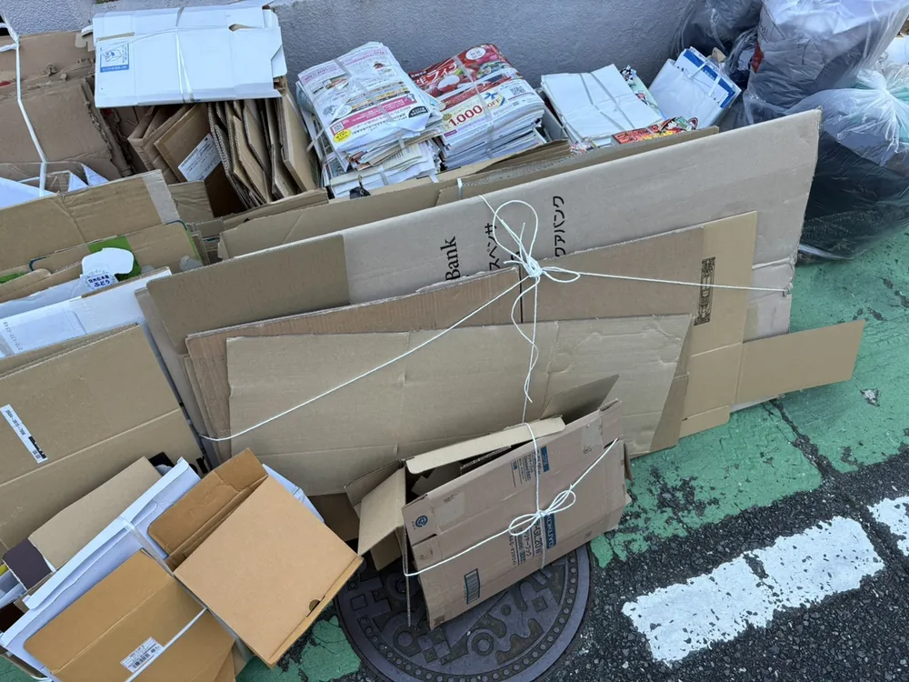
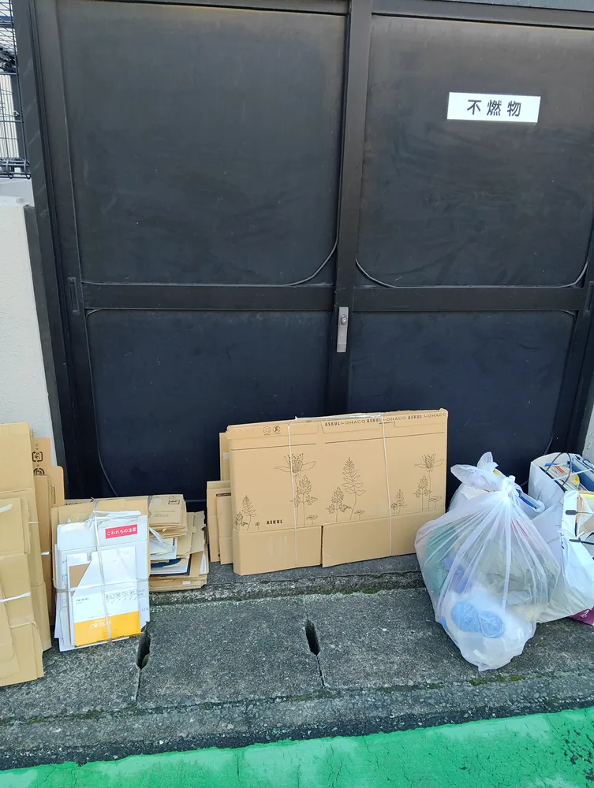
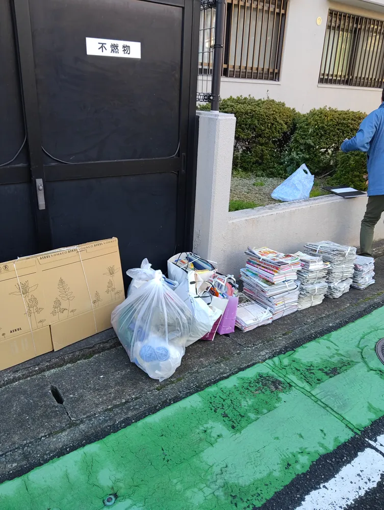
写真は、後ろ姿か、顔が分からないように加工したものだけを載せています。
ご本人はもちろん、ご家族・相談支援専門員の方もご相談ください。